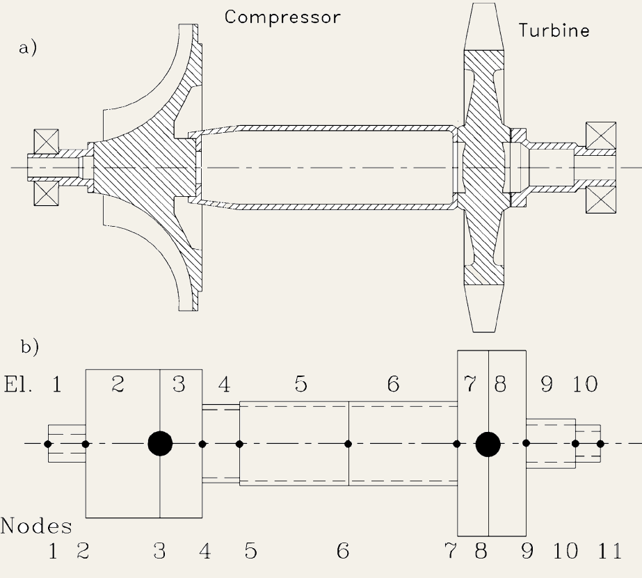

Internal dynamic stability of a turbojet engine’s rotor based on complex coordinates formulation
7th Graduate Research Symposium, Gebze Technical University, Kocaeli, Turkey, 30-31 May 2023. Presentation

Abstract
Rotor-bearing systems have a wide range of applications in many machines including jet engines, turbines, compressors, pumps, etc. Internal instability in these systems has been a well-known problem since the early days of turbomachinery. Rotordynamic instability is generally observed as sub-synchronous vibrations above the first critical speed of the rotor and cannot be improved with enhanced balancing. A rotor system must be free of destructive vibrations for safe operation. Therefore, accurate prediction of eigenvalues and related stability thresholds have critical importance for turbomachinery designers. Frictional joints and structural damping are the main sources of internal instability, that will produce a damping force in the rotating reference frame. Speed dependent instability terms are introduced to the equation of the motion when these damping forces are transformed from rotating reference frame to stationary reference frame. Accurate implementation of rotating damping is a controversial topic in rotordynamic literature and even some of the commonly used commercial software predicts erroneous results. In this study, equations governing the dynamics of the rotor of a turbojet engine are obtained based on a Timoshenko beam model. Rotating viscous and structural damping are properly incorporated into rotordynamic governing equations. The formulation is based on complex coordinates which allow accurate calculation of structural damping forces. Equations of motion with viscous and structural rotating damping are provided for both rotors on isotropic and anisotropic supports. Then, by providing the discretized equations based on finite element method, stability thresholds are calculated. Results are compared with the literature to show accurate implementation of rotating damping with complex vectors. The destabilizing effect of rotating structural damping is shown by analytical results. Additionally, results of isotropic and anisotropic supports are compared to show positive effects of support asymmetry on rotor stability.